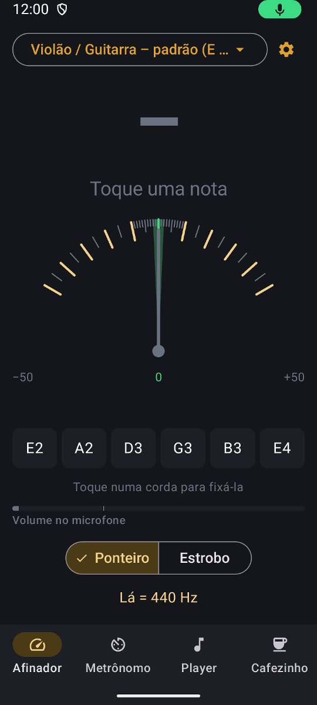
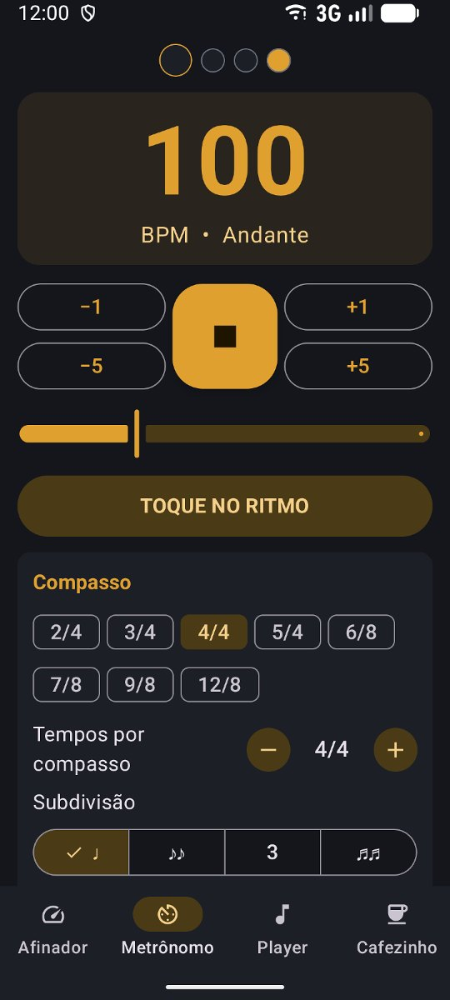
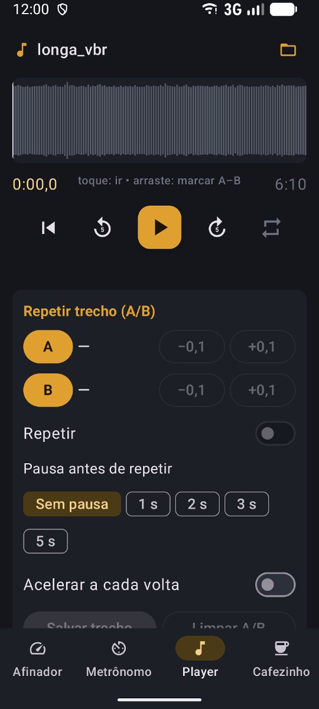
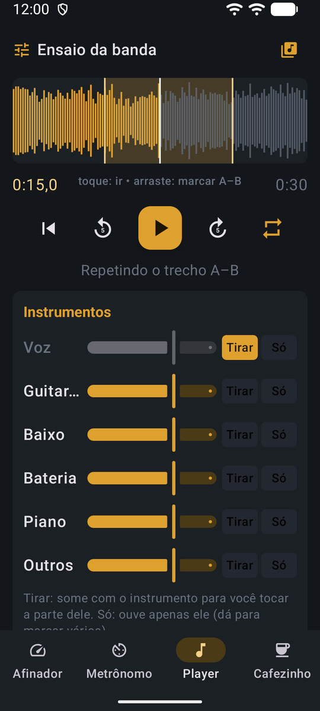

Begood Studio · Afinador, metrônomo e estudo
Afine, marque o tempo e tire o solo.
Afinador cromático de alta precisão, metrônomo com treino de velocidade e player que deixa a música mais lenta sem mudar o tom, com repetição A/B. Separa voz, guitarra, baixo, bateria e piano no próprio celular, com inteligência artificial e sem internet. Grátis e sem anúncios.
Android 8.0 ou superior · Grátis
Está no computador? Aponte a câmera do celular para baixar direto.




Afinador
- Mostra a nota, quantos cents está acima ou abaixo e a frequência.
- Ponteiro ou estrobo, como os afinadores de bancada.
- Precisão medida nos testes: cerca de 0,01 cent em som limpo.
- Toque numa corda para fixá-la quando ela estiver muito desafinada.
Afinações
- Violão e guitarra: padrão, meio tom e um tom abaixo, Drop D, Open G, Open D e DADGAD.
- Guitarra de 7 cordas, baixo de 4 e 5 cordas, cavaquinho, ukulele.
- Violino, bandolim, viola de arco, violoncelo ou modo cromático.
- Lá de referência de 415 a 466 Hz (atalhos 432, 440 e 442).
Metrônomo
- 20 a 300 BPM, ajuste fino, barra ou toque no ritmo.
- Compassos de 2/4 a 12/8; colcheias, tercinas e semicolcheias.
- Treino de velocidade: sobe o BPM sozinho a cada tantos compassos.
- Compassos mudos para treinar o tempo interno.
Player de estudo
- Velocidade de 25% a 200% sem mudar o tom.
- Tom ±12 semitons com ajuste fino em cents.
- Biblioteca com busca, artistas (pelo artista do álbum) e pastas.
- Abre MP3, M4A, FLAC, WAV e OGG do celular.
Separar instrumentos
- Separa voz, guitarra, baixo, bateria, piano e outros com inteligência artificial (Demucs).
- Tudo no próprio celular, sem internet e sem mandar a música para lugar nenhum.
- Tire um instrumento para tocar a parte dele ou ouça só ele.
- Também abre faixas separadas no PC, no Moises ou em outro programa.
Exportar para a banda
- Salva a música do jeito que você deixou: sem um instrumento, mais lenta, em outro tom ou só o trecho A–B.
- Arquivo .m4a pronto para mandar no WhatsApp ou tocar no show.
- Faixas para DAW: cada instrumento num WAV sem perda, alinhado (Reaper, Studio One, Audacity).
Repetir trecho A/B
- Marque A e B no ponto atual ou arrastando o dedo na forma de onda.
- Pausa com contagem antes de repetir e contador de voltas.
- Acelerar a cada volta: comece em 60% e chegue a 100%.
- Trechos salvos por música (“Solo 1”, “Riff do refrão”).
Feito para estudar
- A tela fica acesa enquanto o app está aberto.
- O metrônomo continua tocando junto com o player.
- Sem anúncios interrompendo o estudo.
- Baixe o APK
Pelo celular, toque em “Baixar APK” nesta página.
- Permita a instalação
Abra o arquivo e permita “instalar apps desconhecidos” quando o Android pedir.
- Permita o microfone
No afinador, toque em Permitir para o app ouvir o instrumento.
- Escolha a afinação
No alto do afinador, escolha o instrumento e a afinação. Pronto para tocar.
Onde fica “instalar apps desconhecidos” em cada marca
- Samsung: Configurações › Aplicativos › menu ⋮ › Acesso especial › Instalar aplicativos desconhecidos.
- Xiaomi, Redmi e Poco: Configurações › Privacidade (ou Proteção) › Fontes desconhecidas.
- Motorola e Android puro: Configurações › Apps › Acesso especial a apps › Instalar apps desconhecidos.
- Escolha o app usado para abrir o APK (Chrome ou Arquivos) e ative Permitir desta fonte. Depois de instalar, pode desativar de novo.
- Se o Play Protect avisar que o app é desconhecido, toque em Mais detalhes › Instalar mesmo assim. O aviso aparece para qualquer app de fora da loja.
Atualizações: Baixe o APK da versão nova e instale por cima. Os ajustes e os trechos salvos continuam.
O que mudou na última versão.
Todas as versõesO afinador do Begood Studio serve para violão, guitarra e baixo?
Serve. Tem afinações prontas para violão, guitarra (6 e 7 cordas), baixo de 4 e 5 cordas, cavaquinho, ukulele, violino, bandolim, viola e violoncelo, além do modo cromático para qualquer instrumento.
Dá para deixar a música mais lenta sem mudar o tom?
Dá. O player muda a velocidade de 25% a 200% mantendo o tom, e também muda o tom sem mexer na velocidade.
Como repetir só um trecho da música?
No Player, marque o ponto A e o ponto B (ou arraste o dedo na forma de onda) e ligue Repetir. Dá para acelerar um pouco a cada volta.
Dá para tirar a voz ou a guitarra de uma música?
Dá. Abra a música no Player e toque em Separar os instrumentos. O app separa voz, guitarra, baixo, bateria, piano e outros no próprio celular, sem internet. Leva alguns minutos por música; depois é só tocar em Tirar no instrumento que você quer tocar.
Como mandar a música sem a guitarra para a banda?
Depois de tirar o instrumento (e, se quiser, mudar a velocidade, o tom ou marcar um trecho), toque em Exportar áudio. O arquivo fica na pasta Música › Begood Studio e pode ser compartilhado na hora. Também dá para exportar cada instrumento em WAV para usar numa DAW.
Precisa de internet?
Não. O Begood Studio não tem permissão de internet: tudo funciona no celular, inclusive a separação dos instrumentos e o ensaio sem sinal.
Política de privacidade.
- Sem cadastro, sem anúncios e sem internet: o app não tem permissão de internet.
- O som do microfone é analisado na hora, só para o afinador, e nunca é gravado.
- A separação dos instrumentos é feita no próprio celular: a música não sai do aparelho.
- As músicas abertas no player são lidas do próprio celular.
| Permissão | Para quê |
|---|---|
| Microfone | Ouvir o instrumento no afinador |
| Vibração | Vibrar no tempo do metrônomo (opcional) |
| Notificações | Mostrar o progresso da separação dos instrumentos (opcional) |
| Serviço em primeiro plano | Continuar separando com a tela apagada ou em outro app |
Código aberto: dá para conferir tudo isso no repositório no GitHub. Dúvidas ou problemas: abra uma issue.
Ajudou no seu som?
Os apps são gratuitos e vão continuar assim. Se algum faz parte do seu dia, dá para apoiar com um Pix de qualquer valor.
Chave Pix · e-mail
robertobegood+itau@gmail.com
Roberto Santos da Silva
00020126630014br.gov.bcb.pix0128robertobegood+itau@gmail.com0209Cafezinho5204000053039865802BR5923Roberto Santos da Silva6009Sao Paulo62070503***63047463